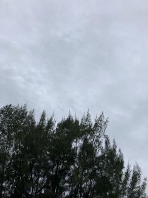
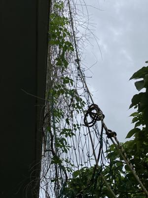
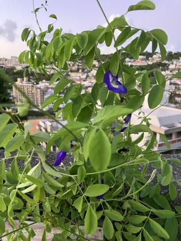

うるがいの話 ある日
最新: Poirot【うるがいの話 ある日】とは 一日だけのプログです
『うるがいの話』の最新一日だけのプログで、通信料が少なく経済的だ。カニの画像をクリックすると全ての日付が載る『うるがいの話』サイトを表示します
|
|
【うるがいの話】 うるがい(ｳﾙｶﾞｲ urugai)とは、『もずくがに』の名前でとても大きくなります。 |
|---|---|
|
|
【カミマヤーの話】 猫のことを方言でマヤーといいます。カミマヤー（kamimayaa）とは、神の猫のことです。 |
|
【たながぁの音楽】 たながぁ（ﾀﾅｶﾞｰ tanagaa）とは手長えびのことで、何種類かあり大きいのは車 エビぐらいになります。 |

|
【ぶながぁの話】 ぶながぁ(ﾌﾞﾅｶﾞｰ bunagaa)とは、赤い髪の毛、赤い身体、そして身長は１ｍ２０ｃｍ ぐらい、川の蟹を食べているの目撃された。場所は沖縄県国頭郡大宜味村のと ある村僕の隣近所に住んでいる爺さんから、聞いた話です。 |
|
|
【ギーマの話】 ギーマ(giima)とは、山原の里山に咲くスズランに似た、 花を付けます。実は食べられます、 気が付くと口の周りが紫になっています。 |
2025年10月23日 (木）Poirot
15:55

これって、名探偵「ポワロ」の英語版、何回も翻訳を見る。ただ
いま、『ナイルに死す Ｄｅａｔｈ ｏｎ ｔｈｅ Ｎｉｌｅ』
を読んでいます。以前に同じことを経験したと調べたら、４月に
『Ｔｈｅ ＡＢＣ Ｍｕｒｄｅｒｓ． ＡＢＣ殺人事件』を読ん
でいる。ネットで、検索してみた。
『名探偵ポワロ』（めいたんていポワロ、
原題：Agatha Christie's Poirot
ポワロ愛と発音の壁 | 敬愛するPoirotを発音できない
それだけに登場人物が「Poirot（ポワロ）」の
名前をうまく発音できなかったり、
聞き間違えたりするシーンには、
ちょっと親近感を覚えます。
私自身も"Poirot" 発音迷子の一人。
クリスティはなぜこんなに難しい名前を
主人公に選んだのでしょう？
うまく呼べないと、
名前すら口に出せない片思いみたいです。
日本における ポワロvsポアロ問題
NHKが「名探偵ポワロ」なのでずーっと
「ポワロ」だと思っていたんですが
書籍では「ポアロ」表記が多いのでしょうか。
そうなんだね、皆一緒だ。ところで、テレビの字幕、人名など読
めない漢字がたまにある。ルビを付けてくれないかな・・・・。
ネットで調べたが、そんな事考える人いないのか探せなかった。
報告）メールの受信が、激減しました（当たり前だが）。
バタフライピーの蔓は、順調に伸びている。

バタフライピーの花が、複数個咲いている
